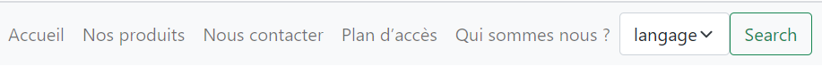

TP02 - Tableaux, Boucles, formulaires (2/6)
Objectif
Rendre le menu dynamique : l'utilisateur chois sa langue.
Attention
Ne remplissez pas le rapport sur votre navigateur , vous ne pourrez pas le sauvegarder.
Téléchargez le sur votre disque dur !
Prérequis
Avant de commencer
- Créez un répertoire TP02
- Copiez collez le fichier TPMenu.php du repertoire TP01
Attention
Vérifiez bien que vous êtes en UTF8.
Exercice 1 - Création du formulaire
Modifiez votre code dans TPMenu.php de façon à obtenir le code suivant :
<nav class="navbar navbar-expand-lg navbar-light bg-light">
<ul class="navbar-nav">
<?php
for ($i= 0; $i < count($lang)-1; $i++) { ?>
<li><a class="nav-link" href="#" ><?php echo ucfirst($lang[$i]);?></a></li>
<?php } //fin de la boucle ?>
</ul>
<form class="d-flex">
<select class="form-select" aria-label="Default select example" name="langue">
<option selected><?= $lang[count($lang)-1];?></option>
<option value="1">Français</option>
<option value="2">Anglais</option>
</select>
<button class="btn btn-outline-success" type="submit">Search</button>
</form>
</nav>Résultat
Lancez TPMenu.php pour voir si tout fonctionne. Vous devez obtenir ceci :
En vous aidant de la documentation php répondez aux questions suivantes :
- A quoi sert la balise
form? - Que fait la balise
select? - A quoi correspond
option selected? - Pourquoi c'est le mot langue qui est affiché en premier dans la sélection sur la barre de navigation ?
- Si vous cliquez sur le bouton quel est le changement obtenu dans
l'URL? - Après avoir choisi Français, quel est le changement obtenu dans
l'URL? - Après avoir choisi Anglais, quel est le changement obtenu dans
l'URL? - En vous aidant de la balise
optionjustifiez sz la valeur respective de 1 ou 2, obtenus dans l'URL ?
Exercice 2 - Récupération des valeurs du formulaire
Vous allez modifier les attributs du formulaire pour qu'il puisse renvoyer quelque chose. Vous obtenez :
<nav class="navbar navbar-expand-lg navbar-light bg-light">
<ul class="navbar-nav">
<?php
for ($i= 0; $i < count($lang)-1; $i++) { ?>
<li><a class="nav-link" href="#" ><?php echo ucfirst($lang[$i]);?></a></li>
<?php } //fin de la boucle ?>
</ul>
<form class="d-flex" method="post" action="TPreponse.php">
<select class="form-select" aria-label="Default select example" name="langue">
<option selected><?= $lang[count($lang)-1];?></option>
<option value="1">Français</option>
<option value="2">Anglais</option>
</select>
<button class="btn btn-outline-success" type="submit">Search</button>
</form>
</nav>Ensuite créez une page TPreponse.php, dans laquelle vous mettrez le code :
<?php
var_dump($_REQUEST);Résultat
Si vous sélectionnez Français vous obtenez :
array(1) { ["langue"]=> string(1) "1" }
Si vous sélectionnez Anglais vous obtenez :
array(1) { ["langue"]=> string(1) "2" }
En vous aidant de la documentation php répondez aux questions suivantes :
- Que fait
var_dump? - A quoi correspond
$_REQUEST? - En vous aidant de l'URL, dans quelle page est affichée la ligne suivante :
array(1) { ["langue"]=> string(1) "1" }? - A quoi correspond l'attribut
method? - A quoi correspond l'attribut
action?
Modifiez votre code dans TPreponse.php pour obtenir :
<?php
var_dump($_REQUEST);
echo '<br>';
echo $_REQUEST['langue'];Résultat
Si vous sélectionnez Anglais vous obtenez :
array(1) { ["langue"]=> string(1) "2" }
2
En vous aidant de la documentation php répondez aux questions suivantes :
- A quel type de variable correspond
["langue"]? - A quel type de variable correspond
$_REQUEST? - Que signifie dans notre cas
=>?
Exercice 3 - Utilisation des valeurs récupérées
Voua allez faire plusieurs changements, tou d'abord au niveau de la balise php modifiez
le code de la façon suivante :
<?php
$menu01 = ["accueil", "nos produits", "nous contacter", "plan d’accès", "qui sommes nous ?", "langage"];
$menu02 = ["home", "products", ""];
//test du $_REQUEST
if (!isset($_REQUEST)) {
$lang = $menu01;
$selected = $lang[count($lang) - 1];
} elseif ($_REQUEST['langue'] === "1") {
$lang = $menu01;
$selected = 'Français';
} else {
$lang = $menu02;
$selected = 'Anglais';
};
?>Ensuite au niveau du formulaire, modifiez le code comme suit :
<form class="d-flex" method="post" action="TPMenu.php">
<select class="form-select" aria-label="Default select example" name="langue">
<option selected><?= $selected; ?></option>
<option value="1">Français</option>
<option value="2">Anglais</option>
</select>
<button class="btn btn-outline-success" type="submit">Search</button>
</form>Résultat
Si vous choisissez anglais , la barre de navigation est en anglais, si vous choisissez français, elle est en français.
En vous aidant de la documentation php répondez aux questions suivantes :
- Quel service rend l'instruction
isset? - Pourquoi dans le test if nous avons
"1"et pas1? - Quel est l'intérêt d'avoir mis une variable selected dans la balise option selected ?